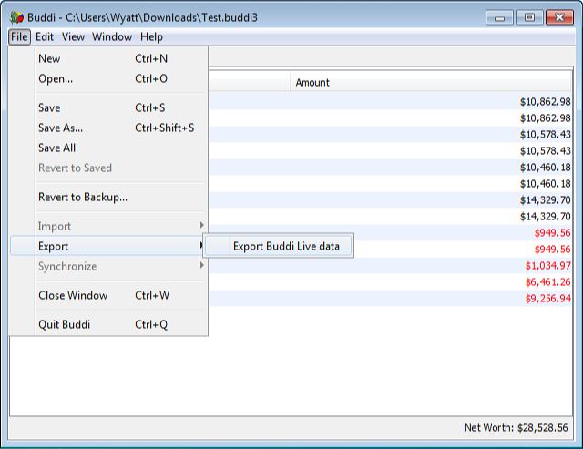
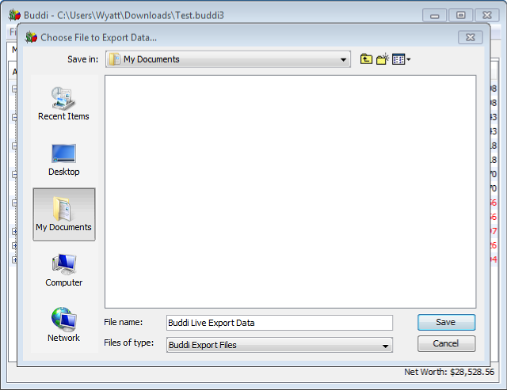
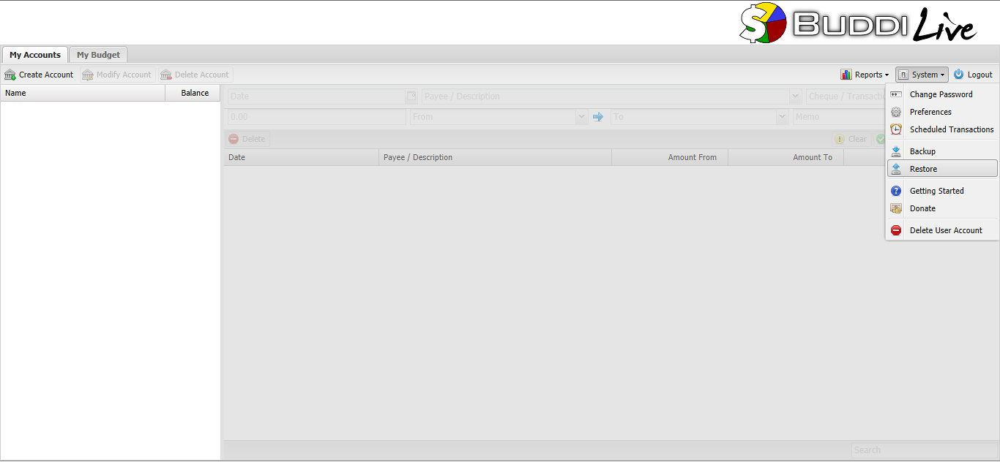
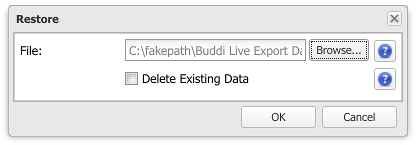

Buddi Live Tutorial - Importing data from Buddi Desktop version
If you are an existing Buddi Desktop user, you can easily transfer all your data over to Buddi Live. There are two steps involved in this: exporting your data, and importing it into Buddi Live.
- Exporting existing data
- From the desktop Buddi program, go File -> Export -> Export Buddi Live data.

- Choose a location to save this file.

- Importing data into Buddi Live
- Log into Buddi Live
- From the menu bar, choose System -> Restore

- Select the .json file that you saved when exporting
- (Optional) Check the 'Delete Existing Data' checkbox.

- Click OK
After the data is added, you should have all the same accounts, budget categories, transactions, etc as you did in the desktop version of Buddi.
Back to Tutorials page